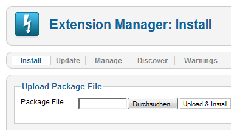
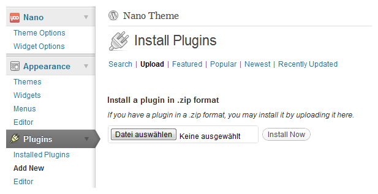

Install Widgetkit
In this tutorial we'll show you, how to install Widgetkit in Joomla & WordPress.
Joomla

To install Widgetkit use the extensions installer in the Joomla administration. Go to Extensions » Extension Manager.
Click on Browse..., select the downloaded Widgetkit archive and click in Upload & Install
That's it. You're done! To start simply go to Components » Widgetkit.
When the installation does not work this way you may try to install the Widgetkit this way:
- Download the latest Widgetkit version and unpack all Widgetkit files to a directory on your pc.
- Using FTP, upload this directory to the /tmp directory of your Joomla installation on your server.
- Go to the extensions installer in the Joomla administration, use the "Install from Directory" option to set the directory of your uploaded Widgetkit files.
- Click on the Install button and Joomla will install it from the given directory.
WordPress
To install Widgetkit use the plugin manager in the WordPress administration. Go to Plugins » Add New and click on the tab Upload.
Click on Browse..., select the downloaded Widgetkit zip archive and click Install Now

After the activation in the plugin manager you will see a Widgetkit menu item in the administration menu on the left. Just click it to get started!
When the installation does not work this way you may try to install the Widgetkit this way:
- Download the latest Widgetkit version and unpack all Widgetkit files to a directory called widgetkit on your pc.
- Using FTP, upload this directory to the /wp-content/plugins directory of your WordPress installation on your server.
- Go to Plugins » Installed Plugins in the WordPress administration and Widgetkit will appear in the overview of all available plugins.
- Click on Activate to activate the newly installed Widgetkit plugin.